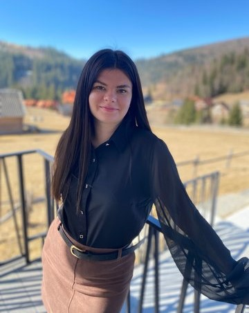

Всім привіт!
Мене звати Вікторія Кущева, мені 24 роки. Я з міста Кривий Ріг.
Моя професія
Працюю за професією на Південному ГЗК - залізничник (черговий по залізничній станції).
Зацікавилась програмуванням ще під час навчання у коледжі (вивчали мову програмування С++), тоді я мала мрію - стати
черговою по залізничній станції на Укрзалізниці, тому великого значення IT-напрямку не надала. Перед початком
повномасштабного вторгнення я здійснила свою мрію, досягла бажаного рівня в роботі, але після 24.02.2022 звільнилась з
роботи і поїхала закордон.
Знайомство з версткою
Закордоном моє світобачення розвинулось, збільшилось і я зрозуміла, що хочу чогось набагато більшого. Тоді спробувала пройти декількаденний курс від GoIT з верстки сайтів і мені сподобалось, зʼявилось бажання розвиватися у цій сфері, але не розуміла з чого почати, де навчатися (у них точно не хотіла купувати курс) та і фінансів не було для того.З часом я:
- повернулась в Україну;
- пішла працювати за професією;
- відкрила для себе роботу на промисловому залізничному транспорті;